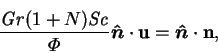
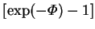
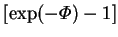

In this project, the primary interest is in vapour transport
between parallel vertical walls. Denoting their common unit normal by  (see §2.5),
the reduced vapour flux at these walls, the (local) Sherwood number, is
(see §2.5),
the reduced vapour flux at these walls, the (local) Sherwood number, is
Since the walls are impermeable to the gas, (2.21)
holds. In dimensionless form this is
|  | (2.61) |
This definition of the Sherwood number
(2.60, see also equation 2.32),
using the mass transfer rate factor,  , instead of the mass
fraction difference,
, instead of the mass
fraction difference,  , for the driving force, is
unconventional, though it was used by Jhaveri and Rosenberger (1982).
Spalding (1960, 1963)
has explained in detail the disadvantages of using the mass fraction
difference as a driving force, but instead proposed the use of a quantity
equivalent to
.
The superiority of the present choice will
become apparent once solutions of the system of equations are found and
examined (ch. 4), especially when a rational approximation
for the system at low mass transfer rates is considered (ch. 6).
, for the driving force, is
unconventional, though it was used by Jhaveri and Rosenberger (1982).
Spalding (1960, 1963)
has explained in detail the disadvantages of using the mass fraction
difference as a driving force, but instead proposed the use of a quantity
equivalent to
.
The superiority of the present choice will
become apparent once solutions of the system of equations are found and
examined (ch. 4), especially when a rational approximation
for the system at low mass transfer rates is considered (ch. 6).
The (local) Nusselt number, Nu, is defined at the parallel vertical walls by:
Since the latent heat factor,  , does not appear in the field
equations (2.52)-(2.55), it will occasionally
be convenient to consider that part of the energy transfer rate independent
of it--the sensible Nusselt number:
, does not appear in the field
equations (2.52)-(2.55), it will occasionally
be convenient to consider that part of the energy transfer rate independent
of it--the sensible Nusselt number:
The above comments on the unconventionality of the definition of the Sherwood
number apply equally to the Nusselt number. As will be
seen in §2.4, the present Nusselt number reverts to the
conventional definition
(e.g. Incropera & DeWitt 1990, p. 347)
in the absence of mass transfer ( ).
).